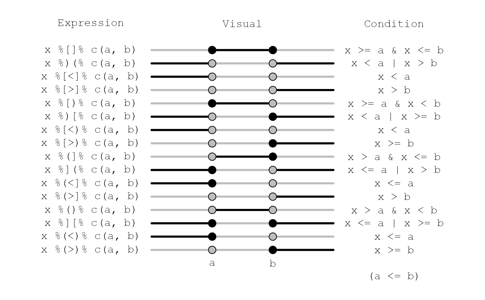
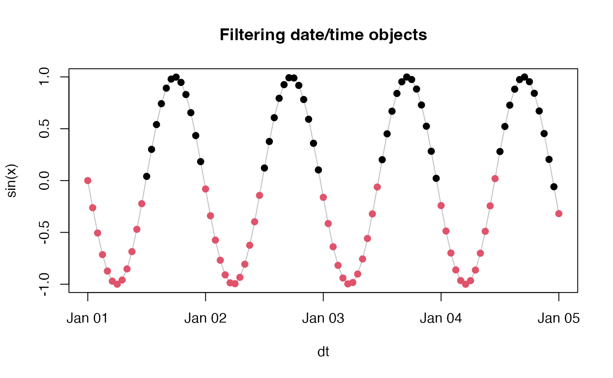

Relational Operators Comparing Values to Intervals
intrval.RdFunctions for evaluating if values of vectors are within intervals.
Usage
x %[]% interval
x %)(% interval
x %[<]% interval
x %[>]% interval
x %[)% interval
x %)[% interval
x %[<)% interval
x %[>)% interval
x %(]% interval
x %](% interval
x %(<]% interval
x %(>]% interval
x %()% interval
x %][% interval
x %(<)% interval
x %(>)% interval
intrval_types(type = NULL, plot = FALSE)Arguments
- x
vector or
NULL: the values to be compared to interval endpoints.- interval
vector, 2-column matrix, list, or
NULL: the interval end points.- type
character, type of operator for subsetting the results. The default
NULLmeans that all types will be displayed.- plot
logical, whether to plot the results, or print a table to the console instead.
Details
Values of x are compared to interval endpoints
a and b (a <= b).
Endpoints can be defined as a vector with two values
(c(a, b)): these values will be compared as a single
interval with each value in x.
If endpoints are stored in a matrix-like object or a list,
comparisons are made element-wise. If lengths do not match,
shorter objects are recycled.
These value-to-interval operators work for numeric (integer, real)
and ordered vectors, and object types which are measured at
least on ordinal scale (e.g. dates), see Examples.
Note: interval endpoints are sorted internally thus ensuring the condition
a <= b is not necessary.
The type argument or the specification of the special function
determines the open (( and )) or
closed ([ and ]) endpoints and relations.
There are four types of intervals ([], [), (], ()),
their negation ()(, )[, ](, ][, respectively),
less than ([<], [<), (<], (<)),
and greater than ([>], [>), (>], (>)) relations.
Note that some operators return identical results but
are syntactically different:
%[<]% and %[<)% both evaluate x < a;
%[>]% and %(>]% both evaluate x > b;
%(<]% and %(<)% evaluate x <= a;
%[>)% and %(>)% both evaluate x >= b.
This is so because we evaluate only one end of the interval
but still conceptually referring to the relationship
defined by the right-hand-side interval object
and given that a <= b.
This implies 2 conditional logical evaluations
instead of treating it as a single 3-level ordered factor.
Value
A logical vector, indicating if x is in the specified interval.
Values are TRUE, FALSE, or NA
(when any of the 3 values (x or endpoints in interval)
are NA).
The helper function intrval_types
can be used to understand and visualize the operators' effects.
It returns a matrix explaining the properties of the operators.
Examples
## motivating example from example(lm)
## Annette Dobson (1990) "An Introduction to Generalized Linear Models".
## Page 9: Plant Weight Data.
ctl <- c(4.17,5.58,5.18,6.11,4.50,4.61,5.17,4.53,5.33,5.14)
trt <- c(4.81,4.17,4.41,3.59,5.87,3.83,6.03,4.89,4.32,4.69)
group <- gl(2, 10, 20, labels = c("Ctl","Trt"))
weight <- c(ctl, trt)
lm.D9 <- lm(weight ~ group)
## compare 95% confidence intervals with 0
(CI.D9 <- confint(lm.D9))
#> 2.5 % 97.5 %
#> (Intercept) 4.56934 5.4946602
#> groupTrt -1.02530 0.2833003
0 %[]% CI.D9
#> (Intercept) groupTrt
#> FALSE TRUE
## comparing dates
DATE <- as.Date(c("2000-01-01","2000-02-01", "2000-03-31"))
DATE %[<]% as.Date(c("2000-01-151", "2000-03-15"))
#> [1] TRUE FALSE FALSE
DATE %[]% as.Date(c("2000-01-151", "2000-03-15"))
#> [1] FALSE TRUE FALSE
DATE %[>]% as.Date(c("2000-01-151", "2000-03-15"))
#> [1] FALSE FALSE TRUE
## interval formats
x <- rep(4, 5)
a <- 1:5
b <- 3:7
cbind(x=x, a=a, b=b)
#> x a b
#> [1,] 4 1 3
#> [2,] 4 2 4
#> [3,] 4 3 5
#> [4,] 4 4 6
#> [5,] 4 5 7
x %[]% cbind(a, b) # matrix
#> [1] FALSE TRUE TRUE TRUE FALSE
x %[]% data.frame(a=a, b=b) # data.frame
#> [1] FALSE TRUE TRUE TRUE FALSE
x %[]% list(a, b) # list
#> [1] FALSE TRUE TRUE TRUE FALSE
## helper functions
intrval_types() # print
#> Expression Visual Condition
#> %[]% x %[]% c(a, b) ---x===x--- x >= a & x <= b
#> %)(% x %)(% c(a, b) ===o---o=== x < a | x > b
#> %[<]% x %[<]% c(a, b) ===o---o--- x < a
#> %[>]% x %[>]% c(a, b) ---o---o=== x > b
#> %[)% x %[)% c(a, b) ---x===o--- x >= a & x < b
#> %)[% x %)[% c(a, b) ===o---x=== x < a | x >= b
#> %[<)% x %[<)% c(a, b) ===o---o--- x < a
#> %[>)% x %[>)% c(a, b) ---o---x=== x >= b
#> %(]% x %(]% c(a, b) ---o===x--- x > a & x <= b
#> %](% x %](% c(a, b) ===x---o=== x <= a | x > b
#> %(<]% x %(<]% c(a, b) ===x---o--- x <= a
#> %(>]% x %(>]% c(a, b) ---o---o=== x > b
#> %()% x %()% c(a, b) ---o===o--- x > a & x < b
#> %][% x %][% c(a, b) ===x---x=== x <= a | x >= b
#> %(<)% x %(<)% c(a, b) ===x---o--- x <= a
#> %(>)% x %(>)% c(a, b) ---o---x=== x >= b
intrval_types(plot = TRUE) # plot

## graphical examples
## bounding box
set.seed(1)
n <- 10^4
x <- runif(n, -2, 2)
y <- runif(n, -2, 2)
iv1 <- x %[]% c(-1, 1) & y %[]% c(-1, 1)
plot(x, y, pch = 19, cex = 0.25, col = iv1 + 1, main = "Bounding box")
## time series filtering
x <- seq(0, 4*24*60*60, 60*60)
dt <- as.POSIXct(x, origin="2000-01-01 00:00:00")
f <- as.POSIXlt(dt)$hour %[]% c(0, 11)
plot(sin(x) ~ dt, type="l", col="grey",
main = "Filtering date/time objects")
points(sin(x) ~ dt, pch = 19, col = f + 1)

## watch precedence
(2 * 1:5) %[]% (c(2, 3) * 2)
#> [1] FALSE TRUE TRUE FALSE FALSE
2 * 1:5 %[]% (c(2, 3) * 2)
#> [1] 0 0 0 2 2
(2 * 1:5) %[]% c(2, 3) * 2
#> [1] 2 0 0 0 0
2 * 1:5 %[]% c(2, 3) * 2
#> [1] 0 4 4 0 0